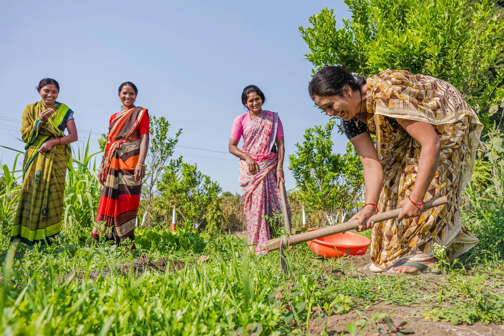
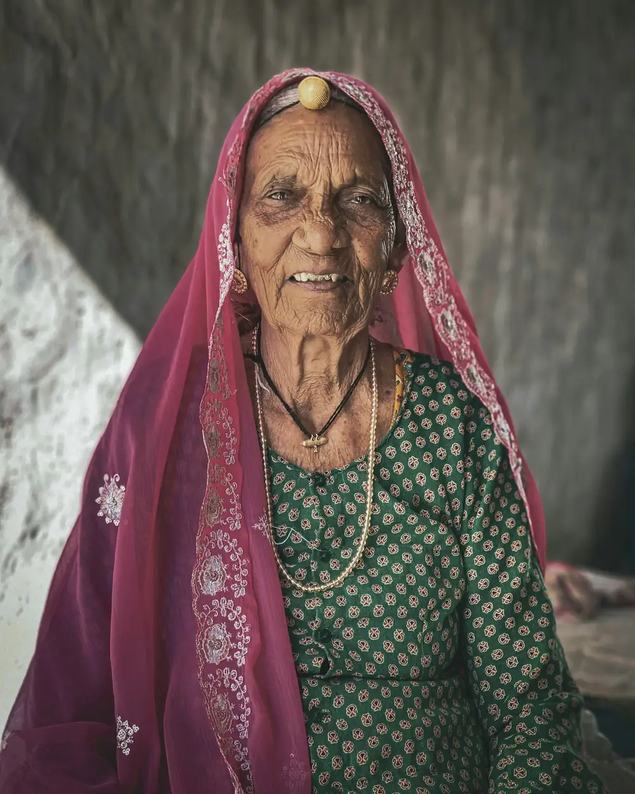

It starts with a forward.
Is it real? Is it meant for you? The message doesn't say.
Student research project, Tamil Nadu
Pakkam finds it. Ask in Tamil, Hindi, English or Tanglish, and see the exact page your answer comes from.
Schemes live in long official documents. People ask in their own language, on WhatsApp, at the ration shop. Somewhere in between, the answer gets lost.
Is it real? Is it meant for you? The message doesn't say.
43 pages
Written in formal Tamil and official English. Few people have the time to read it.
Or they pay someone who says they know. Or they never apply at all.
Ask the way you would ask at home. Pakkam finds the pages, reads them, checks every sentence, and shows you the line it used.
Example answers built from the real documents. Try your own question in the chat.
1
Every one of these is in an official document Pakkam can read today.

Farm families
PM-KISAN: ₹6,000 a year, paid in three instalments of ₹2,000.
Girl students
Pudhumai Penn: ₹1,000 a month, paid into the student's bank account.

Older age
Atal Pension Yojana: a guaranteed ₹1,000 to ₹5,000 a month after 60.
Your question is matched against 18 official documents in Tamil, Hindi and English, whatever language you asked in.
Each sentence cites the page it uses. Numbers are copied from the document, not worked out.
Sentences the pages don't back are removed. If nothing is left, you get the official contact instead of a guess.
From a development test on 48 draft questions across Tamil, Hindi, English and Tanglish. Answer quality is measured next, and the numbers will be updated here as they come in.
Free to use. No sign-up. Your question text is never logged.
Ask your first question